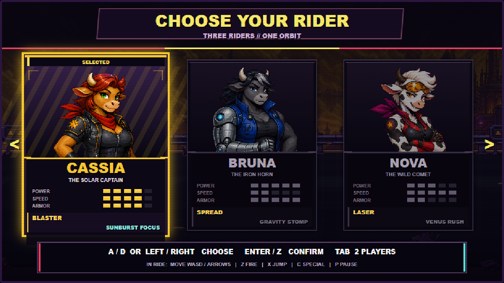
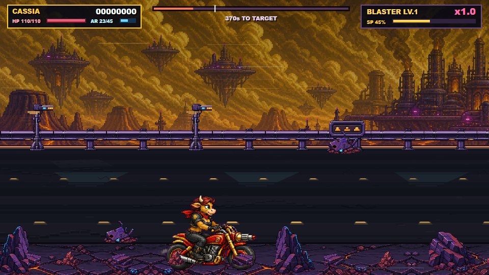

Компактная production-витрина. Здесь остаются только ключевые кадры текущей двухуровневой сборки; полные серии автоматических прогонов хранятся локально в .gauntlet/.
Stage 1 + Stage 2solo + local co-op12 showcase captures
Вход в игру
Стартовый экран и Venus key art

Выбор Cassia, Bruna и Nova
Stage 1 · Venus Highway

Authored обочина и глубина дорогиФинальный бой motorcycle shoot ’em up